Basil
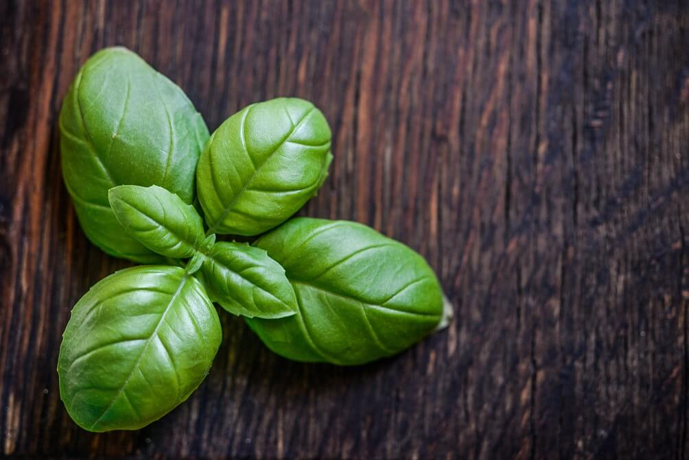Image provided by Monicore
Pexels
- Scientific Name, Family
- Ocimum basilicum, Lamiceae
- Origin
- Basil is native to Africa and Asia
- Alternative names
- Great basil, sweet basil
- Misc
- Basil has a refreshing taste and can be used as a garnish, raw, or cooked.
Bay Leaf
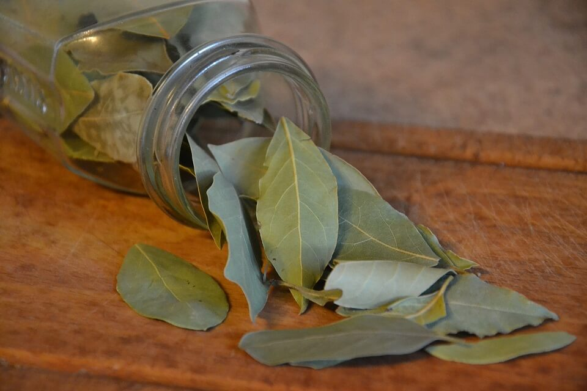Image provided by kropekk_pl
Pixabay
- Scientific Name, Family
- Laurus nobilis, Lauraceae
- Origin
- Bay leaf is native to the Mediterranean
- Misc
- Bay leaf is used as an aromatic and is typically used fresh or dried and then removed after cooking.
Chives
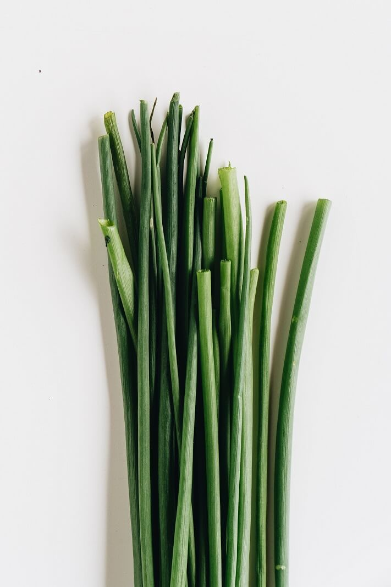Image provided by alleksana
Pexels
- Scientific Name, Family
- Allium schoenoprasum, Amaryllidaceae
- Origin
- Chives are native to North America, Europe, and Asia
- Misc
- The green stalks are used for cooking, although the flowers are completely edible as well. Chives are typically used for their mild onion flavor or as a garnish.
Cilantro
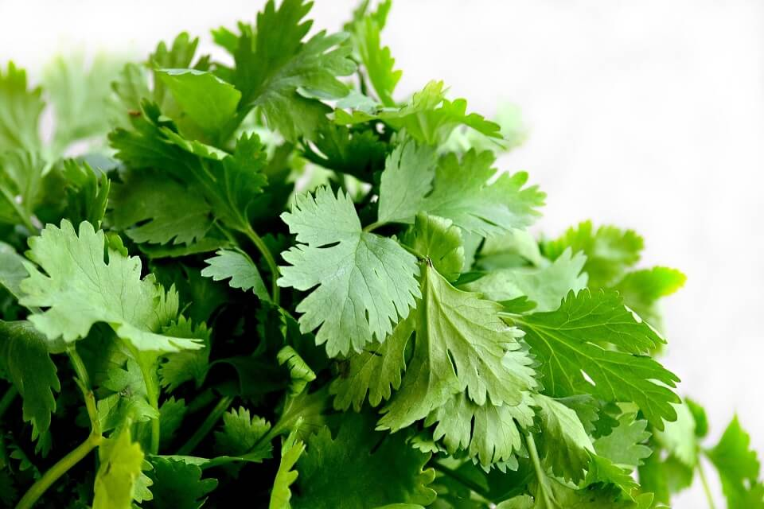Image provided by restyledliving
Pixabay
- Scientific Name, Family
- Coriandrum sativum, Apiaceae
- Origin
- Cilantro is native to Africa, Europe, and Asia
- Also commonly called
- Coriander, Chinese Parsley, as well as other names
- Misc
- Cilantro has a fresh citrous flavor, or a soap flavor due to genetics. Typically the leaves are used for cooking, but the stems are edible as well.
Dill
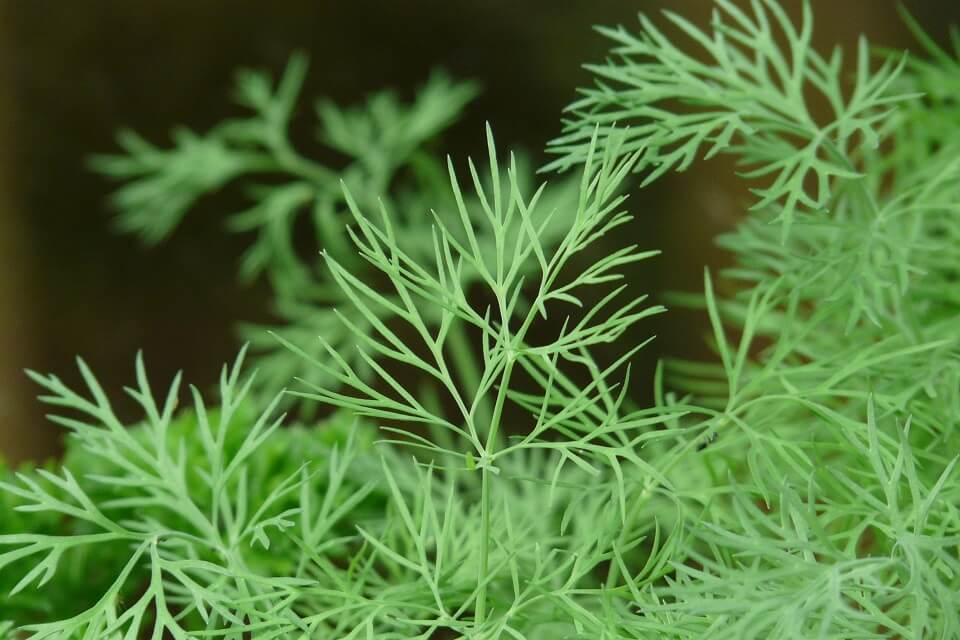Image provided by hans
Pixabay
- Scientific Name, Family
- Antheum graveolens, Apiaceae
- Origin
- Dill is native to the Mediterranean and Europe
- Misc
- Dill has a bright sweet flavor, dill loses flavor when cooked so it is ideal to use to garnish,flavor cold dishes, or as a late addition to heated dishes.
Fennel
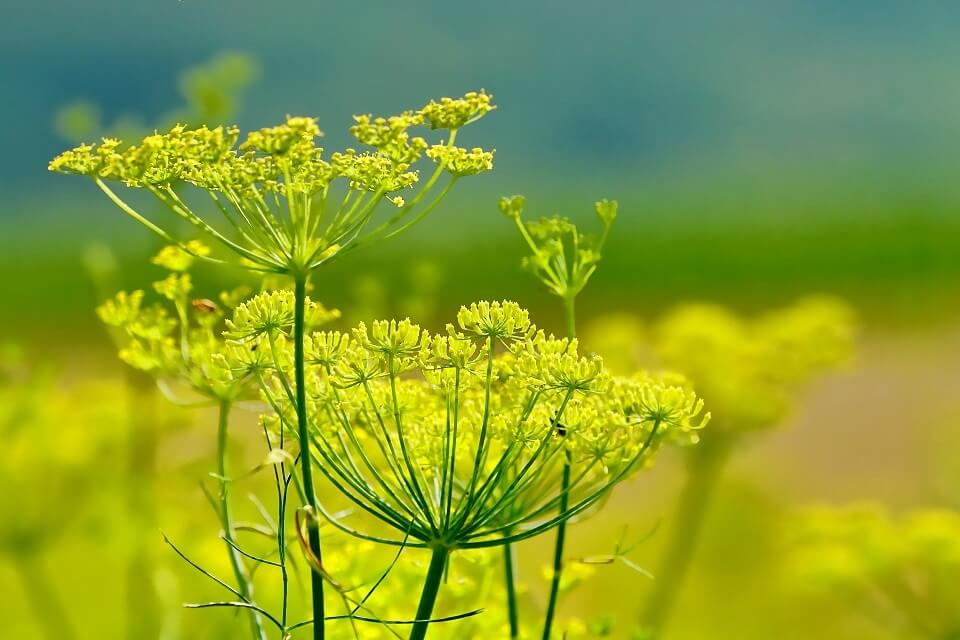Image provided by schwoaze
Pixabay
- Scientific Name, Family
- Foeniculum vulgare, Apiaceae
- Origin
- Native to the Meditteranean
- Misc
- Fennel is similar to celery and has a mild licorice flavor. Fennel can be eaten raw or cooked in a variety of ways.
Lemongrass
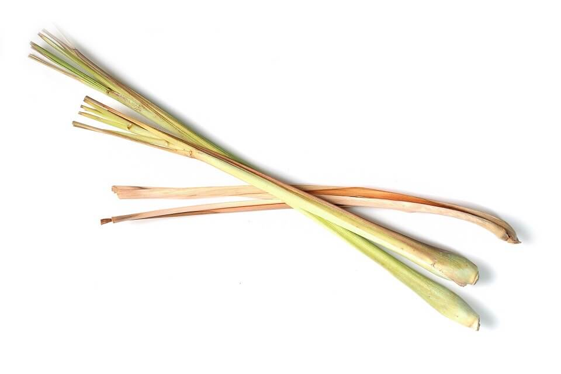Image provided by sti300p
Pixabay
- Scientific Name, Family
- Cymbopogon schoenanthus, Poaceae
- Origin
- Lemongrass is native to South Asia and Southeast Asia
- Alternative Names
- Misc
- Lemongrass has a citrus and grassy aroma, the bottom of the stalk (about 3-4 inches above the root) is typically used.
- If using for aromatics, remove the outermost layer, smash, and remove after cooking.
- If using for consumption, prepare as above and also thinly slice.
Mint
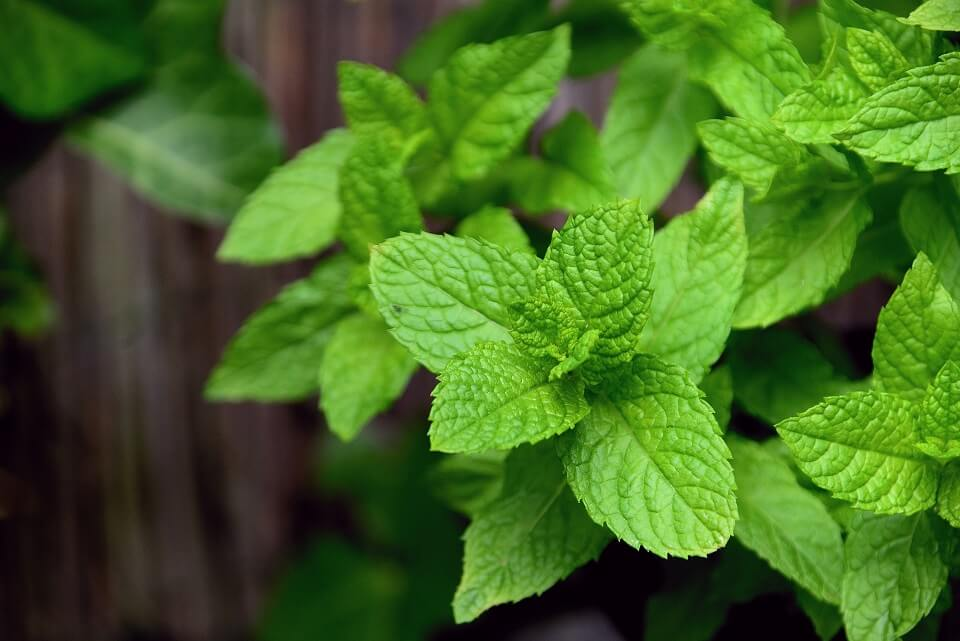Image provided by congerdesign
Pixabay
- Scientific Name, Family
- Mentha spicata, Lamiaceae
- Origin
- Mint is native to Europe and Asia
- Misc
- Mint has a refreshing herbal flavor, it can be used as garnish or cooked.
Oregano
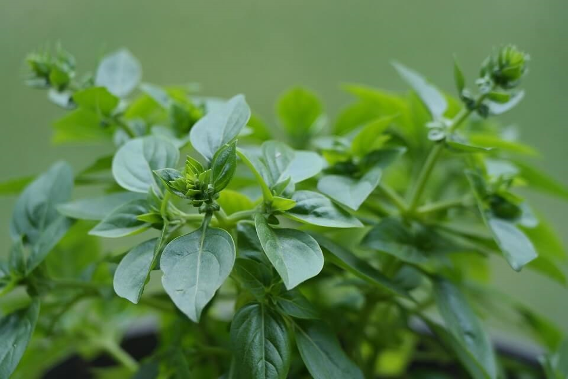Image provided by redbudpatriot
Pixabay
- Scientific Name, Family
- Origanum vulgare, Lamiaceae
- Origin
- Native to Mideritteranean
- Misc
- Oregano is recommended to be either dried or cooked, fresh oregano has a strong taste and smell.
Parsley
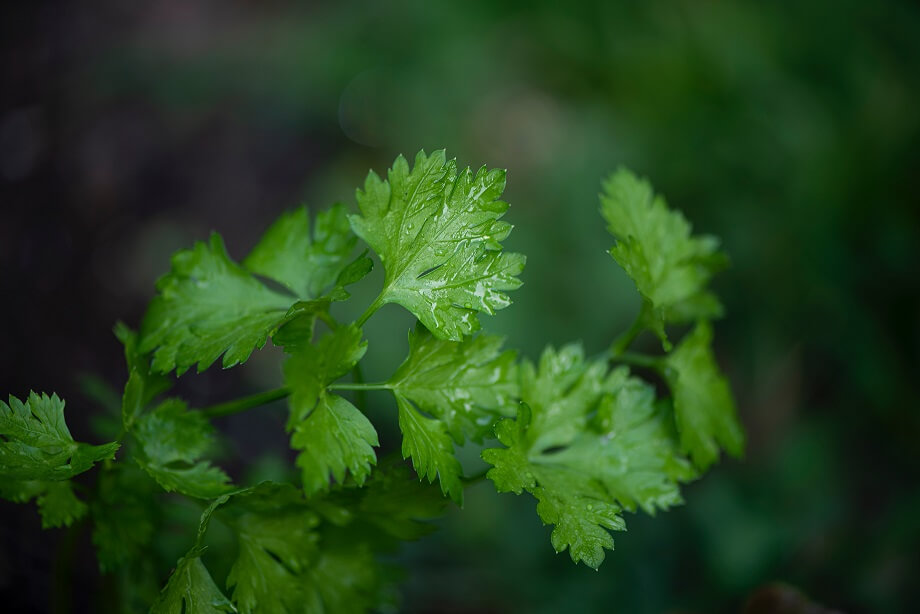Image provided by erdaest
Unsplash
- Scientific Name, Family
- Petroselinum crispum, Apiaceae
- Origin
- Parsley is native to the Mediterranean
- Misc
- Parsley has a similar taste to celery, can be used in soups, sauted, or as a garnish.
Tarragon
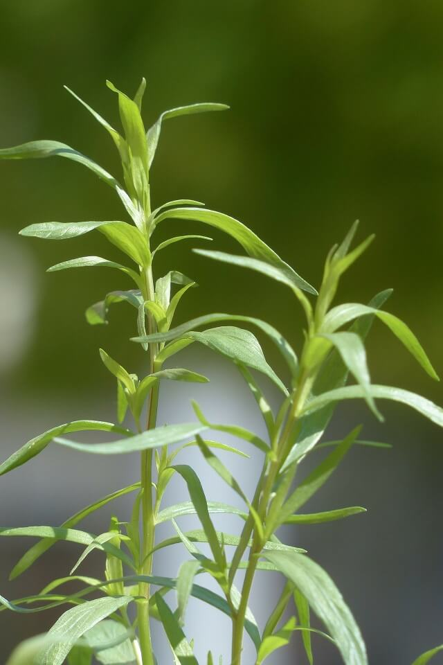Image provided by hans
Pixabay
- Scientific Name, Family
- Artemisia dracunculus, Asteraceae
- Origin
- Tarragon is native to Central Asia and Europe
- Misc
- Tarragon has a licorice flavor, is mild when fresh and has a more concentrated flavor when dried.
- Fresh tarragon should be used raw or added at the end of the cooking process to preserve the flavor.
Thyme
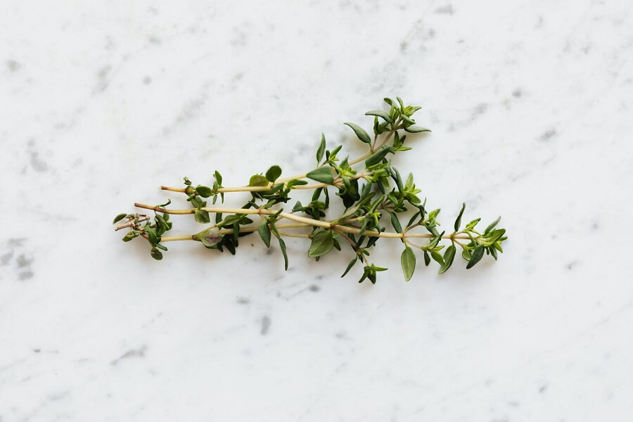Image provided by karolina-grabowska
Pexels
- Scientific Name, Family
- Thymus vulgaris, Lamiaceae
- Origin
- Thyme is native to the MEditerranean
- Misc
- Thyme has an earthy citrous flavor, and can be cooked whole with the stem or with the leaves separated from the stem.